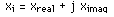
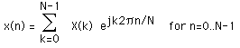
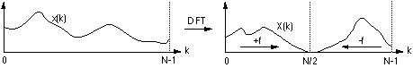
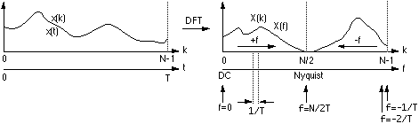
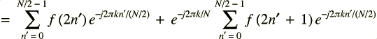
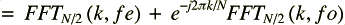
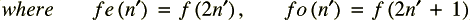
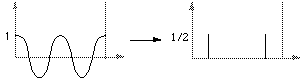
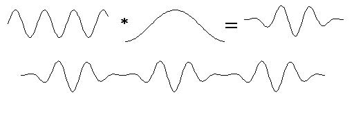
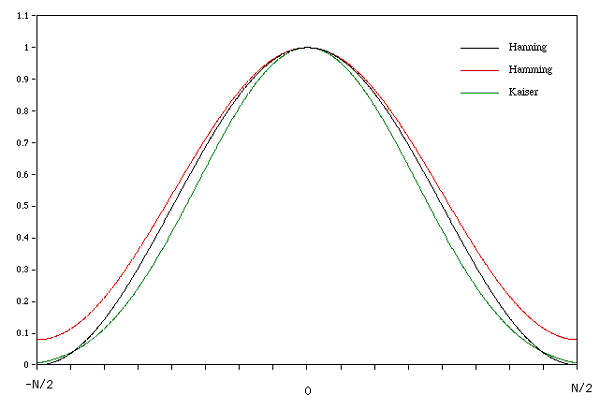

by Albert Kagarmanov, MKS-2 DESY
Linear transforms, especially Fourier and Laplace transforms, are widely used in solving problems in science and engineering. The Fourier transform is used in linear systems analysis, antenna studies, optics, random process modeling, probability theory, quantum physics, and boundary-value problems. The Fourier transform, a pervasive and versatile tool, is used in many fields of science as a mathematical or physical tool to alter a problem into one that can be more easily solved.
Continuous
For a continuous function of one variable f(t), the Fourier Transform F(f) will be defined as:
and the inverse transform as

where j is the square root of -1 and e denotes the natural exponent

Discrete
Consider a complex series x(k) with N samples of the form

where x is a complex number

Further, assume that that the series outside the range 0, N-1 is extended N-periodic, that is, xk = xk+N for all k. The FT of this series will be denoted X(k), it will also have N samples. The forward transform will be defined as

The inverse transform will be defined as

Of course although the functions here are described as complex series, real valued series can be represented by setting the imaginary part to 0. In general, the transform into the frequency domain will be a complex valued function, that is, with magnitude and phase.

The following diagrams show the relationship between the series index and the frequency domain sample index.

For example if the series represents a time sequence of length T then the following illustrates the values in the frequency domain.

Max Error for avoid member with i > N is PI/2*MAX(F')*log(N)/N
The first sample X(0) of the transformed series is the DC component, more commonly known as the average of the input series.
The DFT of a real series, ie: imaginary part of x(k) = 0, results in a symmetric series about the Nyquist ferequency. The negative frequency samples are also the inverse of the positve frequency samples.
The highest positive (or negative) frequency sample is called the Nyquist frequency. This is the highest frequency component that should exist in the input series for the DFT to yield "uncorrupted" results. More specifically if there are no frequencies above Nyquist the original signal can be exactly reconstructed from the samples.
While the DFT transform above can be applied to any complex valued series, in practice for large series it can take considerable time to compute, the time taken being proportional to the square of the number on points in the series. A much faster algorithm has been developed by Cooley and Tukey around 1965 called the FFT (Fast Fourier Transform). The only requirement of the the most popular implementation of this algorithm (Radix-2 Cooley-Tukey) is that the number of points in the series be a power of 2. The computing time for the radix-2 FFT is proportional Nlog(N). So for example a transform on 1024 points using the DFT takes 10 times longer than using the FFT, a significant speed increase. Note that in reality comparing speeds of various FFT routines is problematic, many of the reported timings have more to do with specific coding methods and their relationship to the hardware and operating system.
We defined the FFT as:





So we have RECURSION, see App. 2 for detailed.
Nice picture you can find in http://sepwww.stanford.edu/oldsep/hale/FftLab.html
a f(t) + b g(t) ---> a F(f) + b G(f)
a xk + b yk ---> a Xk + b Yk
#f(t / a) ---> a F(a f)
f(a t) ---> F(f / a) / a
f(t + a) ---> F(f) e-j 2 pi a f
f(t) ej 2 pi a t ---> F(t - a)
Xk ---> (1/N) xN-k
Applying the DFT twice results in a scaled, time reversed version of the original series.

The transform of an infinite train of delta functions spaced by T is an infinite train of delta functions spaced by 1/T.

The transform of a cos function is a positive delta at the appropriate positive and negative frequency.
The transform of a sin function is a negative complex delta function at the appropriate positive frequency and a negative complex delta at the appropriate negative frequency.

The transform of a square pulse is a sinc function

More precisely, if f(t) = 1 for |t| < 0.5, and f(t) = 0 otherwise then F(f) = sin(pi f) / (pi f)
f(t) x g(t) ---> F(f) G(f)
F(f) x G(f) ---> f(t) g(t)
xk x yk ---> N Xk Yk
xk yk ---> (1/N) Xk x Yk
Multiplication in one domain is equivalent to convolution in the other domain and visa versa. For example the transform of a truncated sin function are two delta functions convolved with a sinc function, a truncated sin function is a sin function multiplied by a square pulse.
The transform of a triangular pulse is a sinc2 function. This can be derived from first principles but is more easily derived by decribing the triangular pulse as the convolution of two square pulses and using the convolution-multiplication relationship of the Fourier Transform.
Some expiriments Signal with : 100Hz freq, and we have 2 FFT:
1. Samples are 91,94,...115 (Lucky)
2) Samples are 90,93,...114 (Unlucky)
| Lucky FFT | Unlucky FFT | ||
|---|---|---|---|
| Freq | Amplit |
Freq | Amplit. |
| 91 | 0 | 90 | 0.04 |
| 94 | 0 | 93 | 0.11 |
| 97 | 0 | 96 | 0.14 |
| 100 | 1 | 99 | 0.85 |
| 103 | 0 | 102 | 0.19 |
| 106 | 0 | 105 | 0.15 |
| 109 | 0 | 108 | 0.09 |
| 112 | 0 | 111 | 0.02 |
| 115 | 0 | 114 | 0.001 |
One way to do this is to multiply the signal by a 'window' function:

Most popular window function is Welch -- Bartlett -- Hanning/Hamming -- Kaiser

| Unlucky FFT | Unlucku FFT �mming | ||
|---|---|---|---|
| Freq | Ampl. |
Freq | Ampl. |
| 91 | 0.04 | 91 | 0.0011 |
| 93 | 0.11 | 93 | 0.013 |
| 96 | 0.14 | 96 | 0.021 |
| 99 | 0.85 | 99 | 0.97 |
| 102 | 0.19 | 102 | 0.04 |
| 105 | 0.15 | 105 | 0.011 |
| 108 | 0.09 | 108 | 0.003 |
| 111 | 0.02 | 111 | 0.0015 |
| 114 | 0.001 | 114 | 0.0001 |
The sampling theorem (often called "Shannons-Kotelnikov Sampling Theorem") states that a continuous signal must be discretely sampled at least twice the frequency of the highest frequency in the signal.
More precisely, a continuous function f(t) is completely defined by samples every 1/fs (fs is the sample frequency) if the frequency spectrum F(f) is zero for f > fs/2. fs/2 is called the Nyquist frequency and places the limit on the minimum sampling frequency when digitising a continuous signal.
If x(k) are the samples of f(t) every 1/fs then f(t) can be exactly reconstructed from these samples, if the sampling theorem has been satisfied, by

where

Normally the signal to be digitised would be appropriately filtered before sampling to remove higher frequency components. If the sampling frequency is not high enough the high frequency components will wrap around and appear in other locations in the discrete spectrum, thus corrupting it.
The key features and consequences of sampling a continuous signal can be shown graphically as follows.
Consider a continuous signal in the time and frequency domain.

Sample this signal with a sampling frequency fs, time between samples is 1/fs. This is equivalent to convolving in the frequency domain by fs.

If the sampling frequency is too low the frequency spectrum overlaps, the high frequency components are added into the low frequency range.

1 FT provide (T,X) <-> (f,A) mapping!
FFT is NOT "Some other" DFT it's absolutely the same DFT but calculates VERY faster.
FFT do NOT calculate frequency of function! It calculate some "own" frequency , which can be closed with frequency of function.
ONLY one is absolutely true InverseFFT*FFT = 1, It's useful for signal storage/compression, MP3, jpeg ....
We can't calculate frequency > 2/N using FFT
There a lot of FFT with n != 2**P, but it is more slow than radix-2 fft. If n<2**p we can increase this n to 2**p adding 0.0 in tail of sampling.
/*
Direct fourier transform
*/
short DFT(dir,m,x1,y1,x2,y2)
short dir;
long m;
double *x1,*y1;
double *x2,*y2;
{
long i,k;
double arg;
double cosarg,sinarg;
for (i=0;i<m;i++) {
x2[i] = 0;
y2[i] = 0;
arg = - dir * 2.0 * PI * i / (double)m;
for (k=0;k<m;k++) {
cosarg = cos(k * arg);
sinarg = sin(k * arg);
x2[i] += (x1[k] * cosarg - y1[k] * sinarg);
y2[i] += (x1[k] * sinarg + y1[k] * cosarg);
}
}
/* Copy the data back */
if (dir == 1) {
for (i=0;i<m;i++) {
x1[i] = x2[i] / m;
y1[i] = y2[i] / m;
}
} else {
for (i=0;i<m;i++) {
x1[i] = x2[i];
y1[i] = y2[i];
}
}
return(TRUE);
}
/*
This computes an in-place complex-to-complex FFT
x and y are the real and imaginary arrays of 2^m points.
dir = 1 gives forward transform
dir = -1 gives reverse transform
*/
short FFT(dir,m,x,y)
short dir;
long m;
double *x,*y;
{
long n,i,i1,j,k,i2,l,l1,l2;
double c1,c2,tx,ty,t1,t2,u1,u2,z;
/* Calculate the number of points */
n = 1;
for (i=0;i<m;i++)
n *= 2;
/* Do the bit reversal */
i2 = n >> 1;
j = 0;
for (i=0;i<n-1;i++) {
if (i < j) {
tx = x[i];
ty = y[i];
x[i] = x[j];
y[i] = y[j];
x[j] = tx;
y[j] = ty;
}
k = i2;
while (k <= j) {
j -= k;
k >>= 1;
}
j += k;
}
/* Compute the FFT */
c1 = -1.0;
c2 = 0.0;
l2 = 1;
for (l=0;l<m;l++) {
l1 = l2;
l2 <<= 1;
u1 = 1.0;
u2 = 0.0;
for (j=0;j<l1;j++) {
for (i=j;i<n;i+=l2) {
i1 = i + l1;
t1 = u1 * x[i1] - u2 * y[i1];
t2 = u1 * y[i1] + u2 * x[i1];
x[i1] = x[i] - t1;
y[i1] = y[i] - t2;
x[i] += t1;
y[i] += t2;
}
z = u1 * c1 - u2 * c2;
u2 = u1 * c2 + u2 * c1;
u1 = z;
}
c2 = sqrt((1.0 - c1) / 2.0);
if (dir == 1)
c2 = -c2;
c1 = sqrt((1.0 + c1) / 2.0);
}
/* Scaling for forward transform */
if (dir == 1) {
for (i=0;i<n;i++) {
x[i] /= n;
y[i] /= n;
}
}
return(TRUE);
}
Fast Fourier Transforms
Walker, J.S.
CRC Press. 1996
Fast Fourier Transforms: Algorithms
Elliot, D.F. and Rao, K.R.
Academic Press, New York, 1982
Fast Fourier Transforms and Convolution Algorithms
Nussbaumer, H.J.
Springer, New York, 1982
Digital Signal Processing
Oppenheimer, A.V. and Shaffer, R.W.
Prentice-Hall, Englewood Cliffs, NJ, 1975